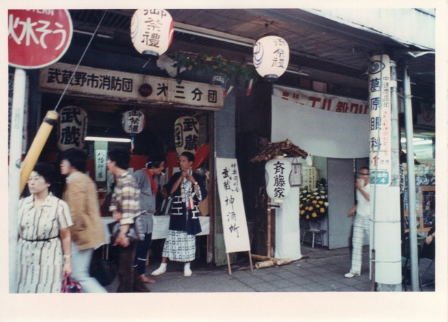
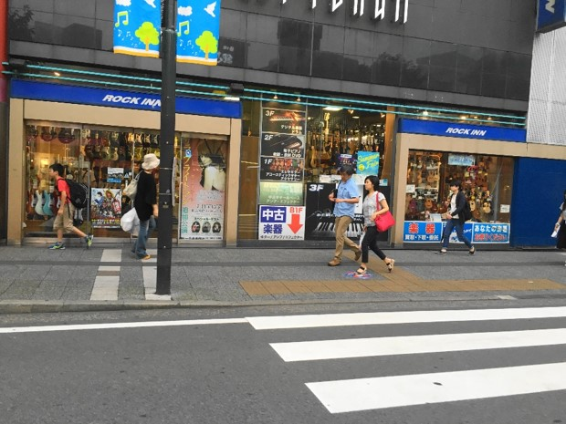

ジョージフォーラム


写真に映っている武蔵野市消防団第三分団は吉祥寺駅北口にあるサーティーワンアイスクリームの西隣となる場所にあった。現在は楽器店になっている。「御祭礼」の提灯が下がっていることから、秋祭りの最中であることが分かる。大ぶりな「武蔵」の提灯は、吉祥寺神輿同好会「武蔵」（現在は改称して武蔵野八幡宮神輿保存会 吉祥寺「武蔵」）のものだ。「武蔵」の会員の話によると、この写真は「武蔵」ができて1〜2年経った頃の写真だそうだ。「武蔵」が発足したのは1976（昭和51年）。したがって、この写真が撮影されたのは1977年～1978年頃となる。
『武蔵』と消防団第三分団とのつながりは深い。『武蔵』が保存している武蔵野八幡宮の宮神輿は、もともと1933年頃、現在の消防団第三分団の前身である「停車場組」のメンバーが中心となって購入したものだった。その後紆余曲折があり、神輿は1960年頃から武蔵野八幡宮に放置されることになった。1976年には若手有志が停車場組OBの承諾を得て武蔵野八幡宮から神輿を引き取り、消防団第三分団の詰め所に置いて修復可能か分解調査を実施。費用を抑えるために木部は自分たちで修復するなどし、完成した神輿に武蔵野八幡宮で入魂式をおこなったのは1977年８月のことだった。
現在の消防団第三分団は、公園通りから井の頭通りに入り、西に向かってすぐの「吉祥寺サンプラザ」付近にある。